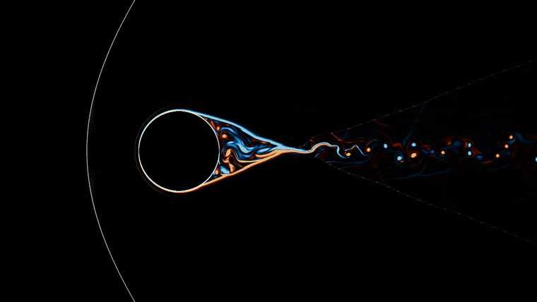
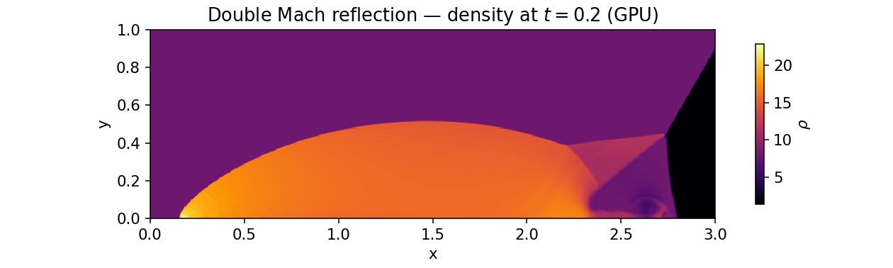
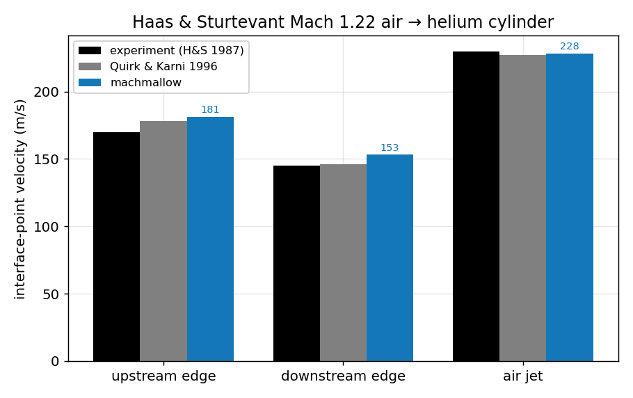
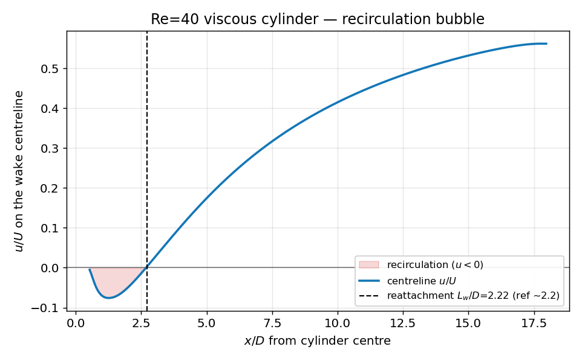
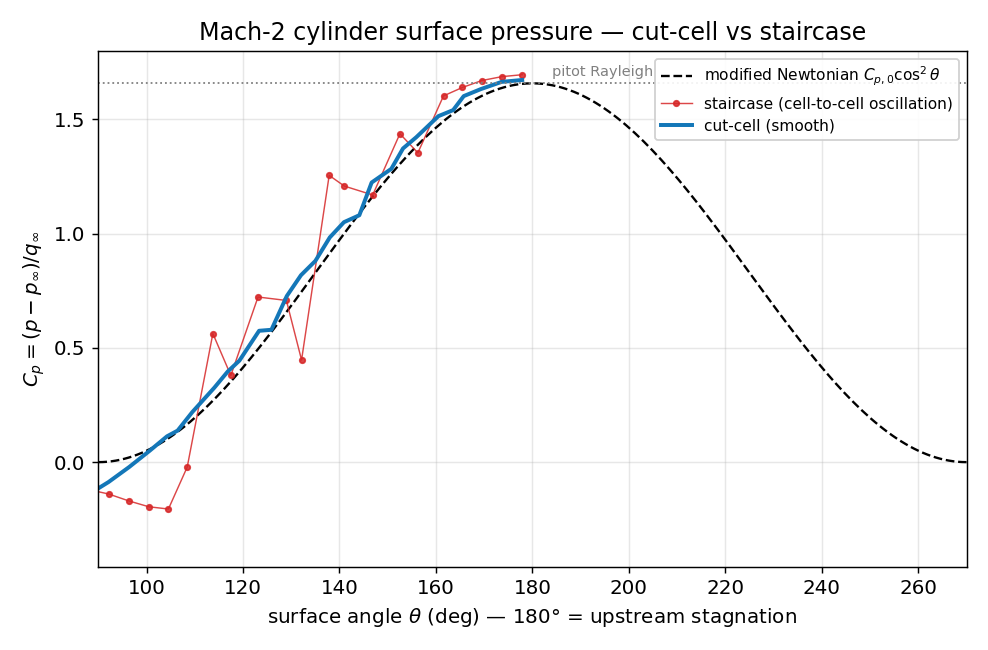
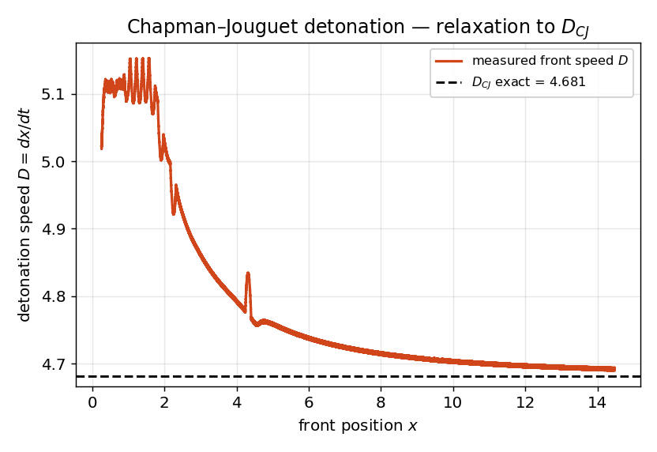
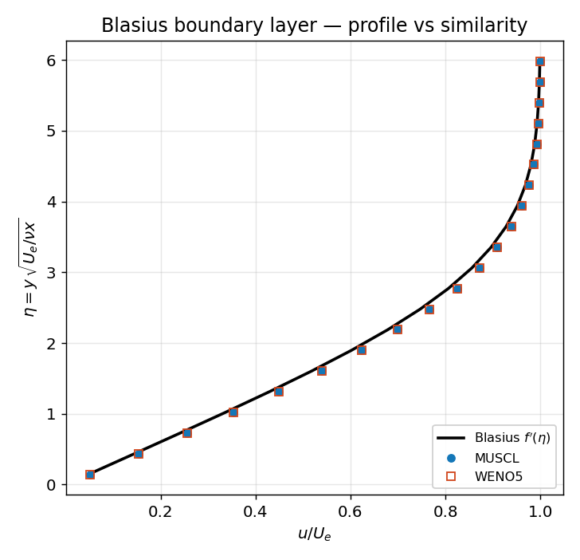
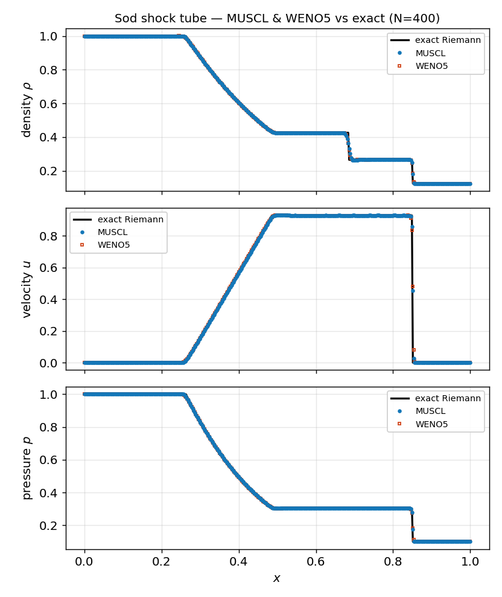
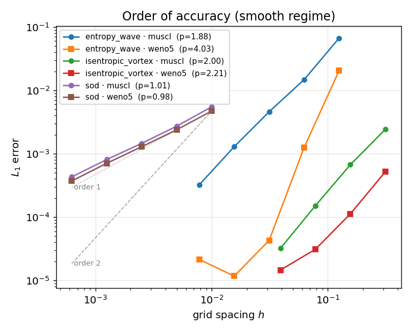

Soft on the outside, supersonic on the inside.
A 2D compressible CFD solver — Euler & Navier–Stokes — with block-structured hybrid CPU/GPU AMR and cut-cell embedded boundaries, written from scratch in C++/Metal for Apple Silicon. No ParaView, no commercial code.

Every numerical method implemented from scratch, readable end to end — a mini-AMReX that runs on your Mac's GPU.
AMReX-style patch hierarchy of arbitrary depth. Recursive Berger–Colella subcycling, pairwise refluxing, guaranteed nesting on regrid.
The GPU computes fluxes on every level through one shared slot pool; the CPU handles regridding. Metal, shaders compiled at runtime, zero-copy unified memory.
Geometrically exact embedded boundaries (volume fractions, face apertures) — 2nd-order LSQ + RK2, viscous no-slip, threaded through the AMR at any depth. No staircase.
2nd-order MUSCL-Hancock with HLLC, or WENO5 + SSP-RK3. Positivity preserving. Verified order of accuracy (incl. MMS for the viscous operator).
Compressible Navier–Stokes (Pr = 0.72, adiabatic no-slip walls), two-gas mixtures, and single-step Arrhenius reactions for detonation / deflagration.
A single .ini case file drives everything, pre-flight
catches errors, macOS CI. Nothing lands without a quantitative
validation gate.
A slice of the validation & verification suite — computed vs exact solutions, theory and experiment. Full dossier in vv/.








macOS 15+, Command Line Tools, CMake ≥ 3.24. metal-cpp is vendored — nothing else to install.
# 1 — clone
git clone https://github.com/fhermet/machmallow.git
cd machmallow
# 2 — build (Release)
cmake -B build -DCMAKE_BUILD_TYPE=Release
cmake --build build
# 3 — run a case ./build/run cases/dmr.ini # double Mach reflection (hybrid AMR) ./build/run cases/cylinder_bowshock.ini # Mach 2 bow shock over a cylinder ./build/run cases/shear.ini # viscous shear layer (Navier–Stokes)
# 4 — render a video (no ParaView)
python3 tools/schlieren_video.py --prefix out/dmr --style schlieren
Read the User Guide · Architecture · Numerics · Validation · Case format.